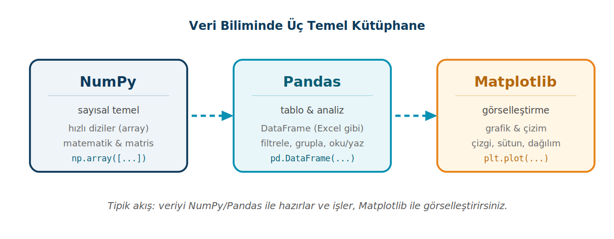
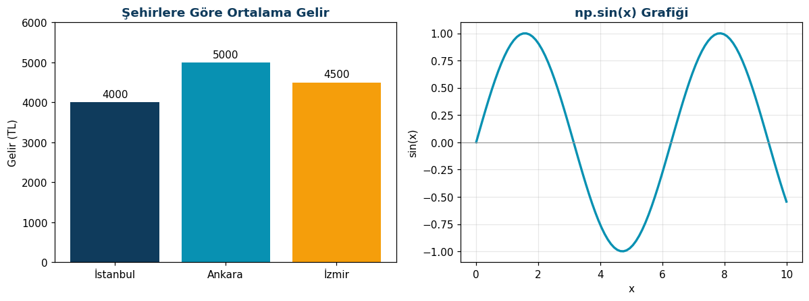

Veriyle Çalışmak: NumPy, Pandas ve Matplotlib
Python'un en güçlü olduğu alanlardan biri veri analizidir. Bu sayfa üç kütüphaneyi tanıtır: sayısal temel için NumPy, tablo hâlinde veri için Pandas, görselleştirme için Matplotlib. Amaç uzman olmak değil; bu araçların ne işe yaradığını görüp küçük örneklerle el alıştırmaktır.
Bu sayfada
1Neden bu üç kütüphane?
Python'un veri biliminde bu kadar popüler olmasının arkasında birbiriyle uyum içinde çalışan birkaç kütüphane vardır. Sade Python listeleriyle binlerce sayıyı işlemek hem yavaştır hem zahmetlidir; bir Excel tablosu gibi satır-sütun veriyi yönetmek için liste yeterli değildir; ve sonuçları göstermek için bir grafik aracına ihtiyaç duyarsınız. İşte bu üç ihtiyaca üç kütüphane karşılık gelir.

Tipik bir veri işinde akış genellikle soldan sağa ilerler: veriyi NumPy ve Pandas ile yükler, temizler ve işlersiniz; sonra Matplotlib ile görselleştirip anlamlandırırsınız. Bu üçü ayrı kurulur (pip install numpy pandas matplotlib) ve genellikle şu kısaltmalarla içe aktarılır:
import numpy as np import pandas as pd import matplotlib.pyplot as plt
Bu takma adlar (np, pd, plt) neredeyse evrensel bir gelenektir; dünyanın her yerinde aynı yazılır.
2NumPy: sayısal temel
NumPy'nin kalbinde dizi (array) vardır. Bir NumPy dizisi, Python listesine benzer ama çok daha hızlıdır ve üzerinde tüm elemanlara aynı anda işlem yapılabilir.
import numpy as np a = np.array([1, 2, 3, 4, 5]) print(a * 2) # [ 2 4 6 8 10] (her elemanı 2 ile çarpar) print(a + 10) # [11 12 13 14 15]
Dikkat edin: a * 2 yazdığınızda döngü kurmanıza gerek kalmadan tüm dizi birden çarpılır. Sade bir Python listesinde [1,2,3] * 2 size [1,2,3,1,2,3] verirdi; NumPy'de ise gerçek bir matematiksel işlem yapılır. NumPy'yi sıradan listelerden ayıran şey budur.
NumPy hazır hesaplama fonksiyonlarıyla da gelir; diziler tek boyutlu olmak zorunda değildir, satır-sütun biçiminde matrisler de oluşturabilirsiniz:
a = np.array([1, 2, 3, 4, 5]) print(a.mean()) # 3.0 (ortalama) print(a.sum()) # 15 (toplam) print(a.max()) # 5 (en büyük) print(a.min()) # 1 (en küçük) m = np.array([[1, 2, 3], [4, 5, 6]]) print(m.shape) # (2, 3) (2 satır, 3 sütun)
Sık kullanılan birkaç hazır dizi üreteci de vardır:
print(np.arange(0, 10, 2)) # [0 2 4 6 8] (0'dan 10'a 2'şer) print(np.zeros(3)) # [0. 0. 0.] (sıfırlardan oluşan dizi) print(np.ones(2)) # [1. 1.] (birlerden oluşan dizi)
NumPy, büyük miktarda sayıyı hızlı ve toplu işlemek için vardır. Pandas ve Matplotlib dahil pek çok kütüphane, arka planda NumPy'yi kullanır; yani NumPy bu ekosistemin temelidir.
3Pandas: tablo hâlinde veri
Gerçek veriler çoğu zaman bir tablo biçimindedir: satırlar kayıtları (kişiler, ürünler), sütunlar özellikleri (ad, yaş, fiyat) tutar. Pandas tam da bunun için iki veri yapısı sunar: tek boyutlu Series ve iki boyutlu (tablo) DataFrame. Bir Series, her elemanına bir etiket (index) verilebilen bir dizidir:
import pandas as pd
s = pd.Series([10, 20, 30], index=['a', 'b', 'c'])
print(s['b']) # 20 (etikete göre erişim)
3.1 DataFrame: tablo
DataFrame, Pandas'ın asıl yıldızıdır; bir Excel tablosu gibi satır ve sütunlardan oluşur. En sık, sütun adlarını anahtar yapan bir sözlükten oluşturulur:
data = {
'Ad': ['Ali', 'Ayşe', 'Mehmet'],
'Yas': [25, 30, 22],
'Sehir': ['İstanbul', 'Ankara', 'İzmir']
}
df = pd.DataFrame(data)
print(df)
Ad Yas Sehir 0 Ali 25 İstanbul 1 Ayşe 30 Ankara 2 Mehmet 22 İzmir
Pandas, bir tabloyu hızlıca tanımanız için hazır metotlar sunar: head() ilk satırları, info() sütun türlerini ve dolu/boş durumunu, describe() ise sayısal sütunların istatistiksel özetini verir.
print(df.head()) # ilk 5 satır df.info() # sütun türleri ve genel bilgi (kendisi yazdırır) print(df.describe()) # sayısal özet (ortalama, std, min, max...)
3.2 Seçme, filtreleme ve sütun ekleme
Bir sütunu adıyla, bir satırı konumuyla seçebilir; bir koşula uyan satırları süzebilirsiniz. Yeni bir sütun eklemek de bir atama kadar kolaydır:
print(df['Ad']) # yalnızca Ad sütunu print(df.iloc[0]) # ilk satır (konuma göre) print(df[df['Yas'] > 24]) # yaşı 24'ten büyük olan satırlar df['Gelir'] = [4000, 5000, 4500] # yeni sütun ekle print(df['Gelir'].mean()) # 4500.0
Buradaki df[df['Yas'] > 24] ifadesi, Pandas mantığının güzel bir örneğidir: önce her satır için "yaşı 24'ten büyük mü?" sorusunun cevabını (True/False) üretir, sonra yalnızca True olan satırları getirir.
3.3 Dosya okuma, yazma ve gruplama
Pandas'ın en pratik yanlarından biri, CSV gibi dosyaları tek satırda okuyup yazabilmesidir. 4-5. haftada dosyayı satır satır okuyup split() ile parçalara ayırarak yaptığımız işler, burada hazır gelir. groupby ise bir sütuna göre satırları gruplayıp her grup için hesap yapmanızı sağlar:
df.to_csv('veri.csv', index=False) # tabloyu CSV'ye yaz
okunan = pd.read_csv('veri.csv') # CSV'yi tabloya oku
print(df.groupby('Sehir')['Gelir'].mean())
Sehir Ankara 5000.0 İstanbul 4000.0 İzmir 4500.0 Name: Gelir, dtype: float64
Pandas, tablo hâlindeki veriyi yüklemek, temizlemek, süzmek ve özetlemek için vardır. Excel'de fareyle yaptığınız işlerin neredeyse tamamı, Pandas'ta tek satır koda dönüşür ve binlerce satıra aynı anda uygulanır.
4Matplotlib: görselleştirme
Veriyi hazırladıktan sonra onu göstermek istersiniz; bir grafik, yüzlerce satırlık tablodan çok daha hızlı anlaşılır. Matplotlib, Python'un en yaygın çizim kütüphanesidir. Temel kullanımı şaşırtıcı derecede kısadır:
import matplotlib.pyplot as plt sehirler = ['İstanbul', 'Ankara', 'İzmir'] gelirler = [4000, 5000, 4500] plt.bar(sehirler, gelirler) # sütun grafiği plt.title('Şehirlere Göre Gelir') plt.ylabel('Gelir (TL)') plt.show() # grafiği ekrana getir
Çizgi grafiği de aynı kolaylıktadır; örneğin NumPy ile bir sinüs eğrisi çizelim:
import numpy as np import matplotlib.pyplot as plt x = np.linspace(0, 10, 100) # 0-10 arası 100 nokta y = np.sin(x) plt.plot(x, y) # çizgi grafiği plt.title('np.sin(x) Grafiği') plt.xlabel('x') plt.ylabel('sin(x)') plt.show()

En çok kullanılan grafik türleri: sütun için plt.bar(), çizgi için plt.plot(), dağılım için plt.scatter(), histogram için plt.hist(). Hepsinin kullanımı benzerdir: veriyi verir, başlık/etiket eklersiniz, plt.show() ile gösterirsiniz.
4.1 Pandas ile Matplotlib birlikte
İşin güzel yanı, Pandas'ın Matplotlib ile doğrudan konuşabilmesidir. Bir DataFrame ya da gruplama sonucunu .plot() ile tek satırda çizebilirsiniz:
df.groupby('Sehir')['Gelir'].mean().plot(kind='bar')
plt.show()
Bu noktada üç kütüphane bir araya gelir: NumPy sayısal temeli sağlar, Pandas veriyi tabloya döker ve özetler, Matplotlib sonucu görselleştirir.
Matplotlib grafiği üç adımdır: veriyi ver, başlık/etiket ekle, plt.show() ile göster. Grafik türünü değiştirmek (bar, plot, scatter) çoğu zaman tek kelimeyi değiştirmek kadar basittir.
5Kendin yaz
Aşağıdaki görevleri önce kendiniz yazmaya çalışın; takıldığınızda çözümü açın. Görevler kolaydan zora doğru sıralanmıştır.
Görev 1: NumPy ile not düzeltme
np.array ile [45, 70, 62, 88, 51] notlarını dizi yapın. Her nota 5 puan ekleyip yeni diziyi, ortalamasını, en yüksek ve en düşük notu yazdırın.
[50 75 67 93 56] Ortalama: 68.2 En yüksek: 93 En düşük: 50
Çözümü göster
import numpy as np
notlar = np.array([45, 70, 62, 88, 51])
yeni = notlar + 5
print(yeni)
print("Ortalama:", yeni.mean())
print("En yüksek:", yeni.max())
print("En düşük:", yeni.min())
Görev 2: Pandas ile geçenler
Ali, Ayşe, Mehmet ve Zeynep'in vize ve final notlarından bir DataFrame oluşturun. Ortalama sütununu (vize %40, final %60) ekleyin ve yalnızca ortalaması 50 ve üstü olan satırları yazdırın.
Ad Vize Final Ortalama 0 Ali 60 70 66.0 1 Ayşe 80 85 83.0 3 Zeynep 90 95 93.0
Çözümü göster
import pandas as pd
df = pd.DataFrame({
"Ad": ["Ali", "Ayşe", "Mehmet", "Zeynep"],
"Vize": [60, 80, 40, 90],
"Final": [70, 85, 45, 95],
})
df["Ortalama"] = df["Vize"] * 0.4 + df["Final"] * 0.6
print(df[df["Ortalama"] >= 50])
Görev 3: CSV'ye kaydet, bölüme göre özetle
Ad, bölüm ve ortalamadan oluşan bir tabloyu to_csv ile sinif.csv dosyasına kaydedin. Dosyayı read_csv ile geri okuyup groupby ile bölümlere göre ortalamayı yazdırın. Projede verileri CSV'de tutup özetlemek için bu akış yeterlidir.
Bolum Bilgisayar 54.5 Elektronik 88.0 Name: Ortalama, dtype: float64
Çözümü göster
import pandas as pd
df = pd.DataFrame({
"Ad": ["Ali", "Ayşe", "Mehmet", "Zeynep"],
"Bolum": ["Bilgisayar", "Elektronik", "Bilgisayar", "Elektronik"],
"Ortalama": [66.0, 83.0, 43.0, 93.0],
})
df.to_csv("sinif.csv", index=False)
okunan = pd.read_csv("sinif.csv")
print(okunan.groupby("Bolum")["Ortalama"].mean())
6Konu sonu testi
Aşağıdaki beş soruyu kendiniz çözün. Her sorunun altındaki Cevabı göster satırına tıklayınca doğru cevap ve açıklaması açılır.
-
Aşağıdaki kodun çıktısı nedir?
soru1.pyimport numpy as np a = np.array([1, 2, 3, 4, 5]) print(a * 2)
- A)
[ 2 4 6 8 10] - B)
[1 2 3 4 5 1 2 3 4 5] - C)
[1, 2, 3, 4, 5, 1, 2, 3, 4, 5] - D)
30 - E) Hata verir
Cevabı göster
ANumPy dizisinde*gerçek bir matematiksel çarpmadır; döngü kurmadan her eleman 2 ile çarpılır. Sade bir Python listesinde ise[1, 2, 3] * 2listeyi tekrarlar. - A)
-
df[df['Yas'] > 24]ifadesi ne döndürür?- A) Yaş sütununun ortalamasını
- B) Yalnızca
TrueveFalsedeğerlerinden oluşan bir sütun - C) Yaşı 24'ten büyük olan satırları
- D) Tablonun yalnızca ilk satırını
- E) Hata verir
Cevabı göster
CPandas önce her satır için "yaşı 24'ten büyük mü?" sorusunun cevabını (True/False) üretir, sonra yalnızcaTrueolan satırları getirir. Sayfadaki tabloda bunlar Ali ve Ayşe satırlarıdır. -
Pandas'ta
groupbyne işe yarar?- A) Tablodaki satırları küçükten büyüğe sıralar
- B) Eksik verileri otomatik doldurur
- C) İki ayrı tabloyu tek tabloda birleştirir
- D) Sütun adlarını değiştirir
- E) Bir sütuna göre satırları gruplayıp her grup için hesap yapar
Cevabı göster
Edf.groupby('Sehir')['Gelir'].mean()satırları şehre göre gruplar ve her şehrin ortalama gelirini verir. -
Bu üç kütüphane için yerleşik olan içe aktarma kısaltmaları hangi satırda doğru yazılmıştır?
- A)
import pandas as np·import numpy as pd - B)
import numpy as np·import pandas as pd·import matplotlib.pyplot as plt - C)
import numpy as nm·import pandas as pnd - D)
import np·import pd·import plt - E)
from numpy import np·from pandas import pd
Cevabı göster
Bnp,pdvepltkısaltmaları neredeyse evrensel bir gelenektir; dünyanın her yerinde aynı yazılır. - A)
-
plt.show()satırının görevi nedir?- A) Grafiği bir görsel dosyasına kaydeder
- B) Grafiğin başlığını belirler
- C) Veriyi tabloya çevirir
- D) Hazırlanan grafiği ekranda gösterir
- E) Açık olan bütün grafikleri kapatır
Cevabı göster
DMatplotlib grafiği üç adımdır: veriyi ver, başlık ve etiket ekle,plt.show()ile göster.
13. hafta bir tanışma haftasıdır: üçünün de yüzlerce fonksiyonu vardır, hedef hepsini ezberlemek değil "hangi iş için hangi araç" mantığını kavramaktır. Takma adlar (np, pd, plt) standarttır. NumPy ekosistemin temelidir, Pandas Excel'in koddaki hâlidir. Daha fazlası için resmî belgeler: numpy.org, pandas.pydata.org, matplotlib.org.
7Kendi başına dene
Aşağıdaki soruları kendi başınıza çözün; çözümleri verilmemiştir.
- Aşağıdaki üç işten her biri için NumPy, Pandas ve Matplotlib'den hangisinin uygun olduğunu yazınız: (a) bir CSV dosyasını tablo olarak okumak, (b) bir sütun grafiği çizmek, (c) bir milyon sayıyı hızlıca toplamak.
- Bir
DataFrame'de ad, yaş ve şehir sütunları olsun. Yaşı 25'ten büyük olan kişileri süzüp (filtreleyip) ekrana yazdırınız. - NumPy ile
np.linspacekullanarak 0–10 arası 100 nokta üretiniz; bu noktaların kosinüsünü (np.cos) hesaplayıp Matplotlib ile bir çizgi grafiği olarak çiziniz.
8İleri okuma
Üç kütüphanenin resmî başlangıç belgeleri:
- NumPy: the absolute basics for beginners (İngilizce)
- pandas: Getting started (İngilizce)
- Matplotlib: Getting started (İngilizce)
Modüller (12. hafta). Bu üç kütüphane harici modüldür; pip install veya conda install ile kurulur ve import ... as ... ile içe aktarılır.